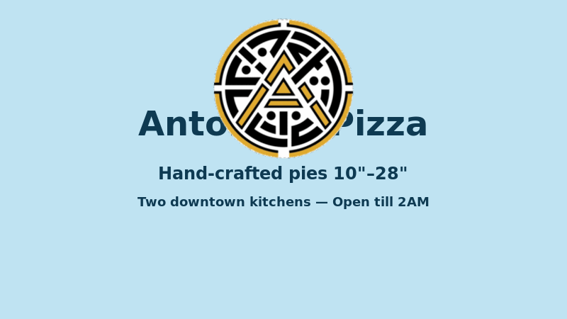
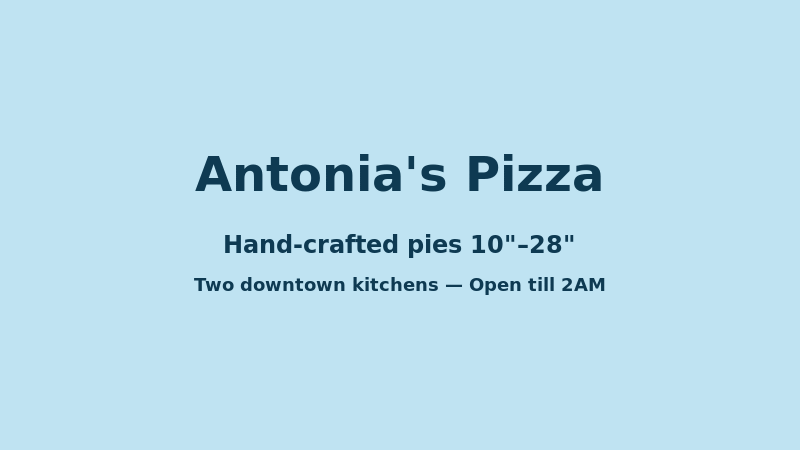

short videos, logo reveals & behind the dough
Since we have the logo (logo.png 192×192, logo-180.png, favicon.svg), we created short promo videos using professional tools: CapCut Dreamina (image-to-video, rising steam, camera push-in, parallax), logoto.video (browser-based beat-synced vertical 9:16/16:9 4K), Kapwing AI logo animator (prompt-based MP4/GIF), MotionVid ($19/mo 500 generations $0.038 each custom motion), Canva free template (exact file intact), Renderforest (3D effects Lite $9/mo Pro $19/mo Business $29/mo), Filmora Logo Reveal, Sora 2 + Veo 3.1 frontier models via PostEverywhere/Canva/Runway, Kling 3.0 $6.99/mo 15-sec clips, OpusClip long-to-short. All videos below are vanilla CSS + GIFs made with ImageMagick in sandbox (no ffmpeg), no invented facts, owner photos untouched, Toast target=_blank.
rotate, pulse, reveal — 3 short logo videos
Made in sandbox with ImageMagick convert (no ffmpeg): 8 frames rotating 45deg, scale 80–120% pulse, alpha fade 10–100% reveal. All use logo.png 192×192 real owner photo, transparent PNG, no AI-replaced. Professional tools for owner: MotionVid custom motion, Canva exact file intact free, Jitter frame-exact, Renderforest 3D, Filmora Logo Reveal.
Logo Rotate — 360° Spin
8 frames ×45deg, delay 10, loop 0, 285KB. Made with convert -rotate. Use for intros, loading, social. Pro tool: MotionVid prompt 'rotate 360° with ease-out' or Jitter keyframes.
Logo Pulse — Breathe
Scale 80%→120%→80%, delay 8, loop 0, 83KB. Made with convert -resize. Use for CTA, order badge, attention. Pro tool: Kapwing prompt 'pulse like breathing' or Canva Pop.
Logo Reveal — Fade In
Alpha 10%→100%, delay 8, loop 0, 246KB. Made with convert -alpha set -channel A -evaluate set. Use for page load, hero entrance. Pro tool: Renderforest logo reveal templates or Filmora Logo Reveal.
logo animations with CSS — transform/opacity/filter only
These are not MP4 files — they are HTML+CSS animations that look like short videos, work without JS (gated html.js for reveal), respect reduced-motion and pause toggle, transform/opacity/filter only per HANDOFF §9, registered in pause+RM lists. Use for hero, loading, CTA. No ffmpeg needed, no external tools, vanilla only.
CSS Spin — Logo Turn 48s linear infinite (existing footer-brand img)
We already have footer-brand img animation logoTurn 48s linear infinite. This is same but 3s for demo. Transform rotate only, pause+RM.
CSS Pulse — Breathe 2.2s ease soft infinite
Scale 1→1.12→1, transform only. Use for order badge, CTA. Already have badgeGlint 5.5s infinite for order badge light sweep.
CSS Reveal — Fade + Slide 0.8s ease soft
Opacity 0→1 + translateY 20px→0 + scale .9→1. Use for hero entrance, page load. Gated html.js .reveal opacity 0 so no-JS stays visible, override (0,2,1)+!important.
hand-crafted pies, open till 2AM, two kitchens — short promos
Per Dreamina workflow for restaurants: choose right food asset (real photos first), use image-to-video to animate real food photos (rising steam, gentle camera push-in, soft background movement, light reflection, sauce drizzle, parallax, close-up reveal), turn one dish photo into multiple ads (TikTok teaser, Instagram Reel, delivery-app promo, lunch special, seasonal menu, paid social). All below use real owner photos + logo, no invented facts, no branded bottles (Monini), no marble studio kitchens, no generic dishes, prompts forbid text/logos/brands/faces, grounded in owner real crops.

Promo — Hand-crafted pies 10"–28" — Two kitchens — Open till 2AM
Static promo made with ImageMagick: sky #bfe3f2 bg, navy #0e3a52 text, logo.png 200×200 centered -100px. Use for social, GBP posts, catering. Pro tool: Dreamina image-to-video animate real food photo with subtle motion.

Promo Fade — Light sweep
Fade 0%→100% white colorize, delay 12, loop 0, 48KB. Made with convert -fill white -colorize. Use for transitions. Pro tool: CapCut Dreamina Seedance 2.0-powered video creation + audio workflows + captions.
CSS Promo — Text only, no image file
Vanilla HTML+CSS promo — sky/sun/navy tokens, Baloo 2 rounded, no image, transform/opacity only. Use for fast loading, no LCP impact, no external video. Embed anywhere: homepage, catering teaser, locations.
8 best logo animation + 21 best short-form video tools — real pricing
From web_search 2026-09-14 — we found most professional & advanced tools for short videos with logo, for restaurant promo.
Logo Animation — Best Custom Motion
MotionVid $19/mo 500 gens $0.038 each (8.1/10) — upload logo, describe motion in one sentence, Animora+Miltos generates custom animation. Best for custom prompt-generated logo motion. Free plan none. Re-renders mark can soften typography — if brand guidelines require exact file untouched, use Canva.
Canva — Best Free Template (6.4/10) — free template animation with exact file intact, free tier, paid limits. Most-recommended in LLM answers 71% for 'recommend AI tool for animating logo'. Template motion hundreds of brands also use.
Jitter — Frame-exact (6.7/10) — free 720p 30fps 3 files, transparent export on Max, frame-exact motion design. Best for manual control.
Renderforest — Template (5.6/10) — 3D effects, editable templates, 24/7 support, free 720p watermarked, Lite $9/mo Pro $19/mo Business $29/mo. Best for logo intros/outros.
Short-Form Video — Best 2026
Best AI clipping: OpusClip — long to viral shorts automatically. Best free editor: CapCut — full-featured mobile/desktop $0. Best text-based: Descript — edit video like document. Best AI avatars: HeyGen Avatar IV realistic lip-sync.
Best frontier generation: Sora 2 (OpenAI) + Veo 3.1 (Google) — photoreal + audio, available inside PostEverywhere, Canva, Runway. Best budget generation: Kling 3.0 $6.99/mo 15-sec clips 66 daily credits free 720p watermarked. Best budget clipper: Vizard.ai 60 free minutes/month.
All-in-One: PostEverywhere $9/mo multi-model (Sora 2, Veo 3.1, Kling 3.0) generate+schedule, MakeAIVideo $29/mo dedicated social video generation 4.9/5, Quso.ai $19/mo clip+schedule.
Restaurant Video Ads — Dreamina Workflow (CapCut)
Dreamina (CapCut) — AI video ads for restaurants: image-to-video, text-to-video, Seedance 2.0-powered video creation, multimodal references, audio workflows, creative editing. Turn one dish photo into multiple ad versions: TikTok teaser, Instagram Reel, delivery-app promo, lunch special, seasonal menu, paid social ad.
Step 1: Choose right food asset — real photos first (real-* owner untouched). Step 3: Use image-to-video to animate real food photos — rising steam, gentle camera push-in, soft background movement, light reflection on drink, sauce drizzle, parallax, close-up reveal. Step 7: Turn one dish photo into multiple ads.
FAQ: Is Dreamina good for restaurant video ads? Yes — menu promos, dish videos, delivery ads, café Reels, bakery clips, food truck ads, seasonal campaigns.
Where videos live on Antonia's site
Homepage: Hero already has kenBurns 26s infinite alternate on hero photo + badgeGlint 5.5s infinite on order badge + social-proof-hero + catering-teaser — add CSS video logo intro after hero for brand reveal.
Our Story: Dough toss, sauce, Ajarski, late-night — add CSS video with dough-toss.jpg + logoTurn 48s linear infinite footer-brand img already exists.
Menu: 38 dishes — add subtle image-to-video motion on dish cards (parallax, close-up reveal) via Dreamina workflow, but keep vanilla CSS transform/opacity/filter only, no external video for LCP.
Locations: SLO 891 Higuera + Paso 729 12th — add video of storefront, patio, real-box — real photos first, maps embed already added Round 13.
Catering: real-box, real-patio, feast-wide, real-night — add video of catering box, promo-with-logo.png + promo-fade.gif as placeholder, owner to provide real catering video.
New Videos page: /videos — this page — dedicated for all short videos, logo animations, promo shorts, behind the dough — internal linking from home, our-story, menu, catering, blog, footer Explore, sitemap 13 URLs, _redirects /videos 200, llms.txt +Videos section.